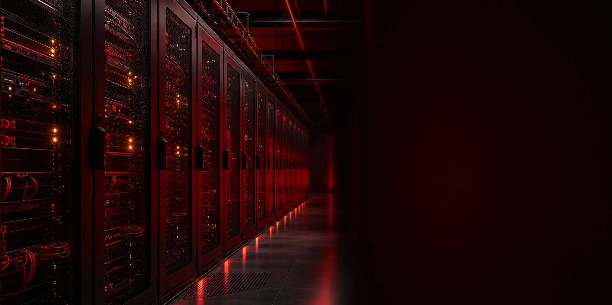

Racks padrão 19"
Opções de meio rack ou rack cheio para acomodar equipamentos de rede e servidores conforme a necessidade do projeto.
Conectamos pessoas, empresas, operadoras e provedores com internet fibra óptica, engenharia de redes e uma facility preparada para projetos de alta disponibilidade.
A Tecnológica TI atua no Oeste da Bahia oferecendo soluções de conectividade para residências, empresas, operadoras e ISPs. Nossa operação reúne rede de fibra óptica, suporte local, consultoria especializada, link dedicado, recursos IPv4 e infraestrutura de data center.
Com atendimento em cidades da região e unidades em Santa Maria da Vitória e Santana, aproximamos infraestrutura de alto desempenho das organizações que precisam crescer com estabilidade, baixa latência e suporte técnico acessível.
Nossa facility oferece um ambiente seguro, escalável e neutro para operadoras, ISPs e empresas que buscam conectividade de baixa latência e alta disponibilidade.
Opções de meio rack ou rack cheio para acomodar equipamentos de rede e servidores conforme a necessidade do projeto.
Infraestrutura com UPS e geradores para aumentar a continuidade operacional dos equipamentos instalados.
Climatização de precisão para manter condições adequadas de operação durante todos os dias da semana.
Monitoramento contínuo e controle de acesso para proteger a infraestrutura e organizar intervenções técnicas.

Nossa Meet-Me-Room (MMR) própria facilita o cross-connect direto entre participantes. Isso reduz etapas de intermediação e cria um ponto organizado para troca de tráfego e acesso a diferentes redes.
Em um ambiente carrier-neutral, o cliente tem liberdade para escolher entre as operadoras disponíveis no local. Essa flexibilidade ajuda a construir projetos com redundância, diversidade de rotas e melhor adequação técnica e comercial.
A integração entre a infraestrutura regional da Tecnológica TI e a conectividade da TILINK amplia as alternativas para projetos corporativos e de provedores. A proposta é facilitar o acesso a backbones, interconexões e soluções dimensionadas de acordo com cada operação.
É a contratação de espaço, energia, climatização, segurança e conectividade para instalar equipamentos próprios dentro de uma infraestrutura de data center preparada.
A MMR é uma área dedicada à interconexão entre redes, operadoras e participantes do data center por meio de conexões diretas, também chamadas de cross-connects.
Significa que o ambiente não limita o cliente a uma única operadora. É possível escolher entre os provedores presentes no local e desenhar estratégias de redundância.
Para operadoras, ISPs e empresas que precisam hospedar equipamentos de rede ou servidores em um ambiente seguro, monitorado, escalável e com energia redundante.
Fale com nossa equipe sobre colocation, interconexão, link dedicado ou engenharia de redes.